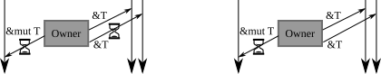

Administrivia
- “Lab 3: FAT32 Filesystem” is due on Mar 2!

Taesoo Kim
Taesoo Kim
It seems the entirety of the Rust standard library is built on top of unsafe code. Granted I understand why this is the case, I don’t understand why we can call Rust “safe.” No matter how structurally sound you build a building, if you build its foundation on unstable ground the building cannot truly be safe.
Cell to C’s pointer?Doesn’t Cell defeat the entire purpose of Rust (to provide simpler memory safety)? In addition, if not, then why isn’t Cell used for all mutable pointers when multiple mutable pointers attempt to access the same memory location?
UnsafeCell<T>!Copy-able types can be stored/loaded to/from Cell as a wholeNote, not thread safe to access them concurrently, more on this topic later
#[repr(transparent)] // Q?
pub struct Cell<T: ?Sized> {
value: UnsafeCell<T>,
}
#[lang = "unsafe_cell"]
#[repr(transparent)]
pub struct UnsafeCell<T: ?Sized> {
value: T,
}
pub const fn get(&self) -> *mut T {
// We can just cast the pointer from `UnsafeCell<T>` to `T` because of
// #[repr(transparent)]
self as *const UnsafeCell<T> as *const T as *mut T
}borrow()/borrow_mut()
Rc allowing multiple ownership (via reference counting)Cell concerning on limited uses of inherited mutability (by restricting references)RefCell bypassing the borrow checks at compilation time (via check at runtime)UnsafeCell restricts Rustc’s reasoning on aliasing/mutabilityNote. limited our discussion to a single thread context
Cell (Atomic)RefCell (Mutex, RWLock)OnceCell, lazy_static